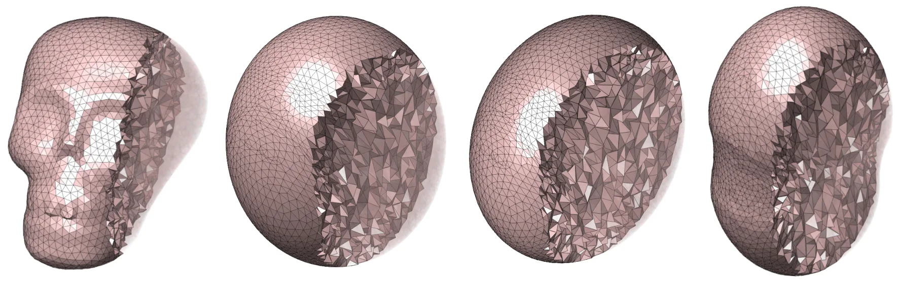
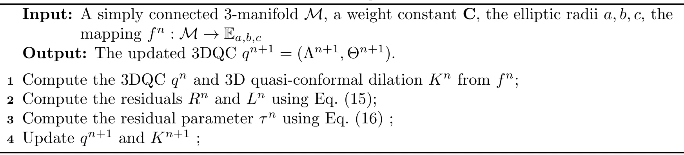

自适应三维体参数化：兼顾形状与质量失真的 3-流形映射Adaptive Volumetric Parameterization of Simply Connected 3-Manifolds with Applications
与三维重建后的体表示、网格处理和 volumetric registration 直接相邻；拓扑限制、规模效率及复杂扫描数据适用性需要核查。
一句话工作总结
通过自适应目标域、准共形更新和密度均衡降低三维体映射失真，并支撑体网格重采样、配准与形变。
摘要
该工作面向 simply connected 3-manifolds 的体参数化，解决统一映射到实心球导致显著几何失真的问题。框架联合控制局部形状与质量失真，并在优化中自适应调整目标域，支持指定实心椭球、体积归一化可变椭球和 sea-embedded free-boundary 三种设置。每种设置均组合三维准共形形状更新、扩散式密度均衡和消除单元翻折的几何校正，可进一步用于多分辨率或局部自适应体网格重采样、体配准和体形变。
Volumetric parameterization, the process of mapping a 3-manifold onto a simplified volumetric domain, is important for many tasks in computer graphics and imaging science. However, most prior volumetric parameterization approaches have only utilized standardized domains such as a solid ball regardless of the overall shape of the given 3-manifolds, which introduces significant geometric distortion and affects the subsequent shape processing and analysis tasks. To overcome this issue, in this work we propose a novel volumetric parameterization framework for simply connected 3-manifolds. Specifically, the proposed framework jointly controls local shape and mass distortions, while adapting the target domain during the optimization process. It enables three progressively more flexible target-domain settings for the parameterization: a prescribed solid ellipsoid, a volume-normalized adaptive ellipsoid with variable radii, and a sea-embedded free-boundary domain. For each setting, the parameterization algorithm consists of a 3D quasi-conformality shape update, a diffusion-based density-equalizing update, and a geometric correction procedure for removing element foldings, thereby allowing for volumetric parameterizations with different desired effects. Experimental results are presented to demonstrate the effectiveness of our proposed framework. Moreover, our framework can be easily applied to multiresolution and localized adaptive volumetric remeshing, volumetric registration, and volumetric morphing. Altogether, our work provides a new way for the representation, processing, and analysis of 3-manifolds.
中文解读摘录
图表/页面预览
{kind=link}

{kind=link}
